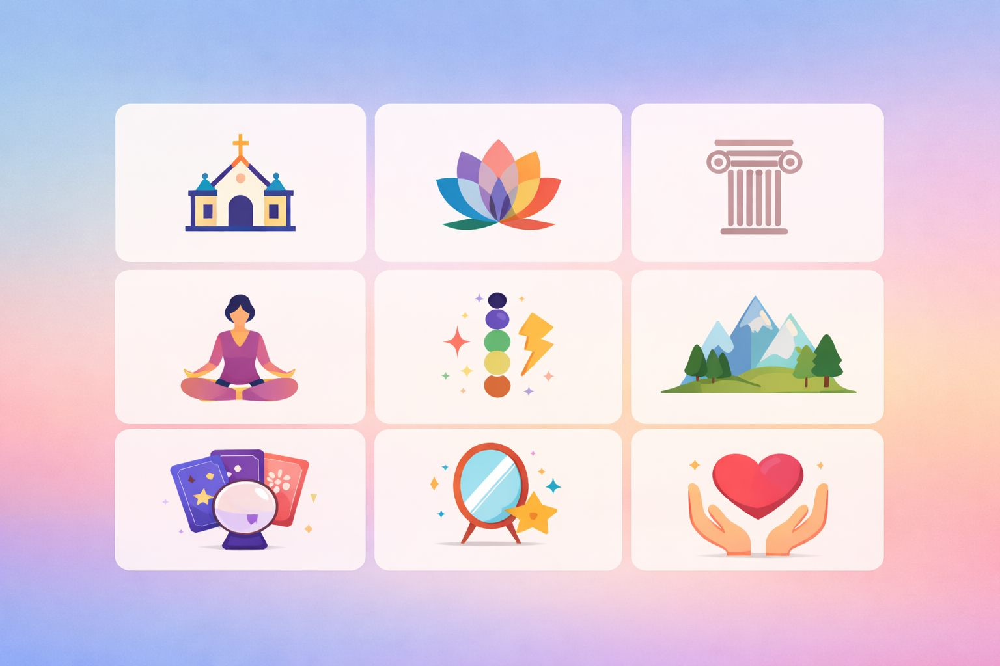
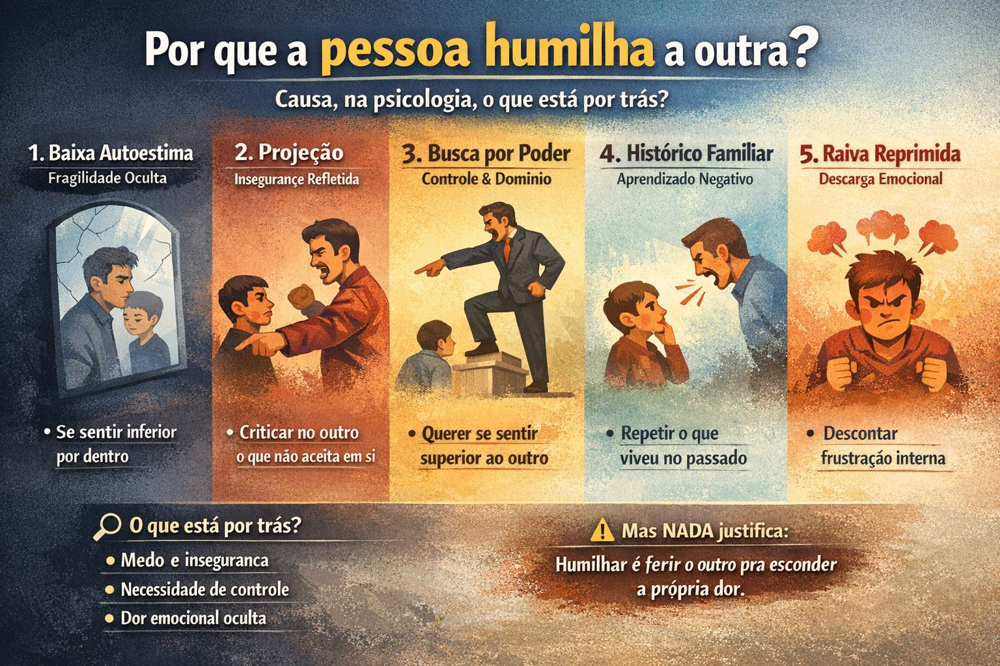
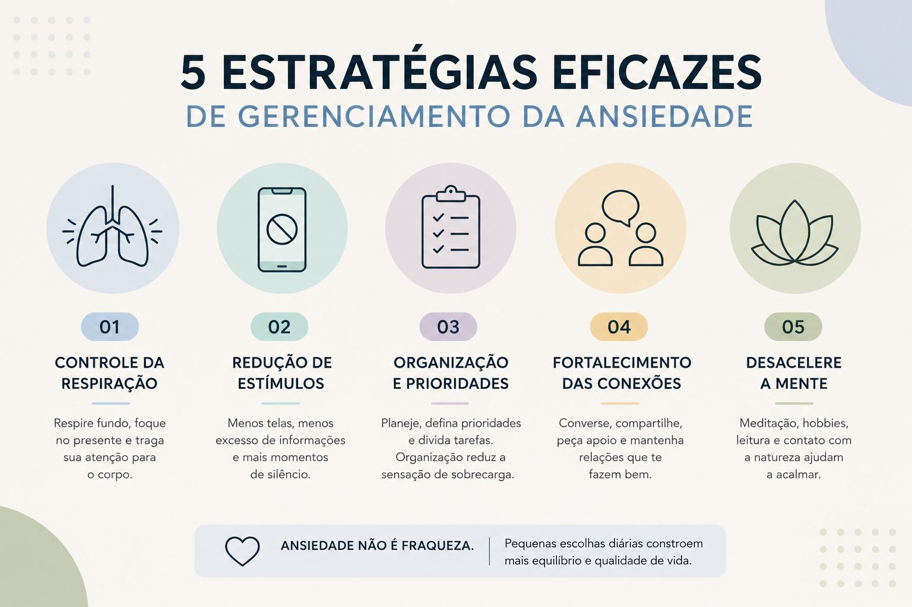

Evolução e autoconhecimento
Matérias sobre evolução, autoconhecimento, saúde emocional e espiritualidade, com referências e sugestões de material e apoio complementar.

O que é Constelação Familiar?
Uma abordagem terapêutica que olha para as dinâmicas inconscientes do sistema familiar.
Ler matériaO que é terapia e para que serve?
Terapia individual e em grupo: como funcionam e por que cuidar da saúde mental.
Ler matériaO que é Espiritismo?
A doutrina codificada por Allan Kardec, seus fundamentos e benefícios.
Ler matéria
O que é a “sombra” na psicologia e o método 3-2-1
Uma prática simples para reconhecer, compreender e integrar partes de si que costumam ficar ocultas.
Ler matériaO que é PNL (Programação Neurolinguística)?
Para que serve, como funciona e quais são os benefícios da PNL.
Ler matéria
Como as pessoas te enxergam: hábitos que constroem ou prejudicam sua imagem
Pequenos comportamentos do dia a dia dizem mais sobre nós do que grandes discursos.
Ler matéria
Espiritualismo: o que é ser espiritualista?
Espiritualista, espírita e espiritualizado: as diferenças e as formas de viver a espiritualidade.
Ler matéria
Qual é a causa de alguém humilhar outra pessoa?
O que está por trás de quem humilha — e como se proteger sem se diminuir.
Ler matéria
Suicídio: compreender para prevenir
Causas, sinais de alerta, espiritualidade e onde buscar ajuda. Você não está sozinho.
Ler matéria
O que é TDAH? Causas, sintomas e tratamento
Um transtorno real, não preguiça: como identificar e tratar, com um checklist rápido.
Ler matériaO que é ser analfabeto tradicional, funcional e digital?
Mais que ler e escrever: compreender, interpretar e participar do mundo.
Ler matériaCrise de ansiedade, de pânico, déficit de atenção e TDAH
Entenda as diferenças, os sinais e a importância do acolhimento.
Ler matériaO Hino Nacional Brasileiro: significado, importância e valor cultural
Símbolo da nossa pátria e expressão do nosso povo.
Ler matéria
Antes e depois da pandemia: o que mudou nas pessoas?
Hábitos, rotinas e prioridades mudaram. O desafio agora é encontrar equilíbrio.
Ler matériaProcrastinar: o que é, causas, efeitos e como superar
Por que adiamos o que é importante e um plano simples, passo a passo, para começar.
Ler matériaQuaresma, conversão do coração e jejum das palavras
As recomendações do Papa Leão XIV para a Quaresma de 2026.
Ler matéria
5 estratégias eficazes de gerenciamento da ansiedade
Ansiedade não é fraqueza: pequenas escolhas diárias constroem mais equilíbrio.
Ler matériaEspiritualidade é a busca por sentido
Quem sou eu? Qual é o sentido da vida? O caminho interno para encontrar significado, conexão e paz.
Ler matéria
O que é pior: a mentira ou o segredo?
A diferença entre mentir e guardar um segredo, por que fazemos isso e como lidar com a verdade.
Ler matéria